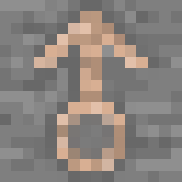
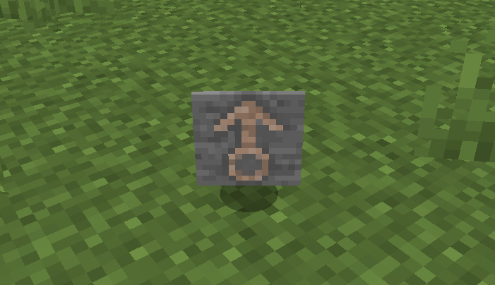

物品的模型与材质
我们在上一节创建了我们自己的物品，但这个物品还只是一个紫黑块。在这节，我们将为其加入材质。(如果你之前创作过材质包，应该会对本章内容非常熟悉)
Minecraft的模型与材质都放在jar文件里的assets.minecraft包内。但是，Minecraft的assets与代码在不同的jar类库中，如下图。
模型，顾名思义，就是物品的形状。而材质，大家都懂，我就不解释了。我们需要先创建物品的模型，才能为其添加材质。
开始添加模型
在开始之前，我们可以先浏览assets/minecraft下的目录，了解一下Minecraft资源包的目录结构。
因为我们的物品是一个『简单物品』，因此不我们也需要多复杂的模型，只要一个扁平的贴图即可。因此，我们可以直接复制原版的模型并进行修改。例如原版的铁锭、钻石剑等。
因为Minecraft会从assets/<modid>/models/item读取物品模型，因此我们在src/main/resources下创建assets/modderguide/models/item。然后创建文件<物品ID>.json，本文则为test_item.json。
我们直接参照铁锭的模型，我这里先把铁锭模型的代码贴出来。
{
"parent": "item/generated", // 要修改的部分
"textures": {
"layer0": "item/iron_ingot" // 要修改的部分
}
}
首先第二行"parent"，也就是这个模型的父模型，表明该模型继承于item/generated，但这个item/generated是Minecraft提供的，因此我们需要在前面添加minecraft:，改为minecraft:item/generated。即使我们不添加，Minecraft也会默认从assets/minecraft下加载模型，但我们最好还是加上去，养成良好的代码习惯。
这里的minecraft:item/generated最前面的『minecraft』表示下面的内容在minecraft这个命名空间 (Namespaces)内。这样，Minecraft将会从assets/minecraft下加载模型。每一个Mod都有自己的命名空间，即这个Mod的modid。
其次是第四行"layer0"，这是材质的目录。我们将其改成modderguide:item/test_item即可。
当然，我们仅仅创建了一个简单的模型，如果我们需要创建更加复杂的模型呢？我们只需要用第三方建模软件即可。网上的建模软件有很多，我自己用的是Blockbench (不是恰饭)。
添加材质
Minecraft的物品材质主要放在assets/minecraft/textures/item下。因此，我们的材质也要放在相应的位置。这里需要注意：Minecraft仅支持png格式的图片。
下图就是我们的材质了，也就是我的头像！

启动游戏测试
启动游戏，可以看到我们的物品已经有了漂亮的材质了，启动游戏试试吧！

如果材质不能正常显示，可能是哪个步骤有问题，或是拼写错误，请你自己阅读日志进行解决。作为开发者，一定要学会分析日志。